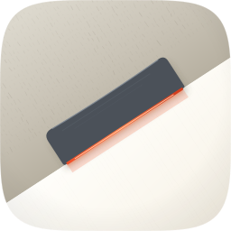
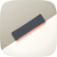
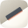
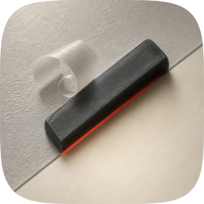
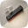
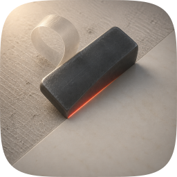
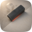
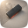
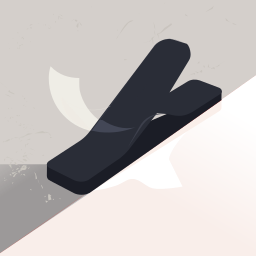
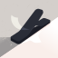

| Take | Renders at 128 / 32 / 16 css px (2× retina sources), plus the 16px squint magnified | Rubric | Verdict |
|---|---|---|---|
| A · icon.svgEngine A, hand-authored layered SVG — vector alternate |
   |
11 / 12 | The highest-scoring take, and the vector alternate rather than the shipping one. Checks 1–4 verified on the real renders, not imagined: focal 61.4% of tile, optical centre (506, 490), margins L192 R204 T245 B290, and the blade-only fill test gives a chunky nameable iron with no smear. Measured figure-ground 4.82:1 against the un-planed side and 7.41:1 against the trued side; the two fields sit 1.54:1 apart, so the split is the read even in greyscale. Four real layers named #bg / #mid / #fg / #highlight, mapping 1:1 onto Icon Composer. Point deducted at #10: under an aggressive monochrome tint that collapses mid-tones, the blade and the un-planed field can flatten to one value and the cutting edge is lost against it. Kept on disk as icon.svg with its generator build_icon.py, so it stays the editable route back if the raster's liabilities bite. |
| C1 · icon-engineC-cfd884.pngEngine C, GPT Image 2 raster, corpus-referenced |
  |
9 / 12 | The material target, and it won the material comparison outright: dense graphite with a lit top face, worn rounded corners, and a vermilion under-edge that bleeds warm light onto the board. All three were rebuilt into the master. It loses on the thing the icon is actually about — the two sides of the diagonal are almost identical in value, so nothing reads as improved, which fails #11. Also fails #5 (diffuse light with no single direction; the shaving's shadow disagrees with the blade's) and hard-fails #10 as a flat pre-masked raster, the corpus's most common failure. Shipping it would re-create exactly that. |
| C2 · icon.pngEngine C, GPT Image 2 raster, second take — SHIPS (user's call) |
   |
7 / 12 | The shipping icon, chosen by the user on look after the sheet was scored. It is the lowest-scoring raster and the second-lowest take overall, and the score stands as audited rather than being revised to fit the decision. It earns the choice on material: the graphite reads dense and physical, the worn corners and the red under-glow are convincing, and the shaving curl gives the tile the mid-pass life the vector master gave up. Against that: a hard specular bloom sits top-left, which is legacy-era drag under a grammar whose depth comes from rim light and soft occlusion with zero hard speculars (#5, #9); the focal drifts to roughly half the tile and sits low (#2); and it is a flat pre-masked raster, so #10 hard-fails. Its measured lighting also works against the concept, which is the liability worth knowing about — see the recommendation below. |
| B · icon-engineB-arrow-a2a087.svgEngine B, Arrow vector take |
  |
5 / 12 | The clear loser. The blade forked into a wishbone, so the silhouette reads as a clothespin rather than a plane iron (#3 hard-fail) and the thin arms smear at 16px (#4 hard-fail); the object also crowds the right edge (#2). The vermilion hone line, which is the entire signature of this direction, is simply absent, so #11 goes with it, and the trued side rendered pink, adding a second hue carrying no meaning (#6). One thing survived into the master: its diagonal is steeper and more decisive than the first draft's, and the flatter, more direct presentation reads better small. |
icon.svg is the route back. (2) Its own lighting works against the concept. Sampled on the masked 1024, the un-planed side measures L 0.426 and the trued side L 0.363, so the side that is supposed to be brighter and truer is in fact slightly darker, because a warm bloom sits on the rough side and a vignette sits on the trued one. The before-and-after reads as a texture change rather than an improvement. The banner compensates by carrying a wider split in its own ground. (3) A hard specular bloom top-left is legacy-era drag under Tahoe grammar (#5, #9), and the focal sits at roughly half the tile, low and left of centre (#2). (4) At 16px it survives as a dark bar with a warm edge, which is the read that matters, but the shaving and the grain go to mush well before that. (5) It cannot be edited. Any future change means a new generation and a new audit, not a diff.Rubric: the 12-point icon audit from icon-directions.md (mask discipline, grid, silhouette, 16px identity, single light model, palette discipline, figure-ground, depth coherence, era fit, variant robustness, personality, no-text) — checks 1–4 non-negotiable, delivery bar ≥10/12. Raster takes audited on their squircle-masked 1024 versions. Render commands: rsvg-convert -w {1024,256,64,32} for SVGs, the same via an embedded-image wrapper for rasters.
#DCD8CD→#B2AB9B un-planed, #FFFFFE→#F7F2E7 trued), achromatic graphite (#4B5159→#101215), and one vermilion reserved strictly for the honed edge (#C4341A/#F2542D/#FF7C46).bg the two-state cushion tile; mid the grain and the hone's spill; fg the blade, the carrying shape; highlight the hone line and rim light.